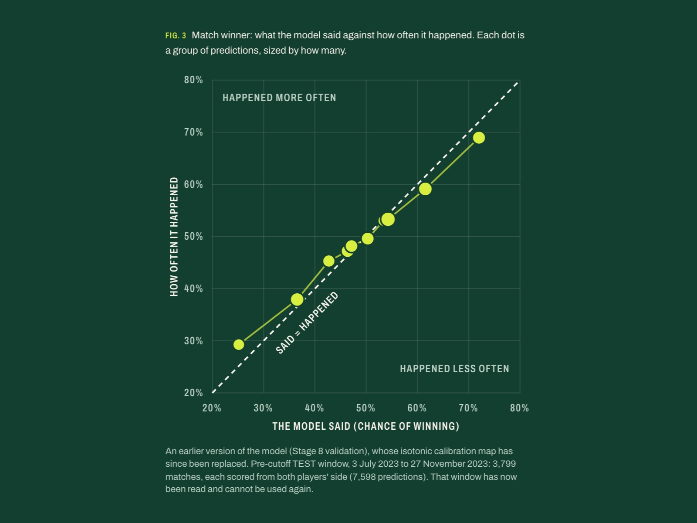

Tennis Match Projection Model
A pre-match pricer for ATP tennis: two players in, fair odds out for every standard market, from match winner to total games. A web app tracks whether it can match the Betfair Exchange on matches it has never seen.
- Serves: tennis fans
- Difficulty: Hard



Ingredients
 Python
Python Pandas
Pandas Scikit-Learn
Scikit-Learn Historical ATP match data
Historical ATP match data
Method
- Gather ATP and Challenger results from 2010 on, trim out walkovers and retirements, and split them by date into fitting, tuning, test and holdout windows.
- Season each player with serve and return rates from matches strictly before the one being priced, plus a surface Elo, a court-speed index for the venue and a prior for players with little data.
- Turn the two chances of winning a point on serve into game, set and match odds with closed-form scoring maths, then recalibrate each market with Scikit-Learn so the stated chances match how often things happen.
- Taste-test on the holdout matches, read only once: across 6,202 matches the stated chances were off by 0.3 percentage points on average.
- Plate it in a Next.js web app that scores every market against Betfair Exchange prices on new matches, and calls each one only after 1,000 scored matches.
Order 01Machine learning
Chef's Notes
Always split the matches by date, never at random. Letting future results slip into the training data makes the model look far better than it really is. Surface matters more than you would expect: a player's clay record says little about how they will go on grass.